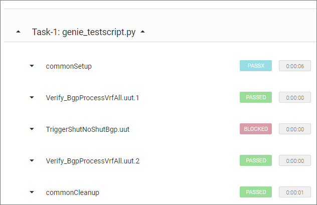
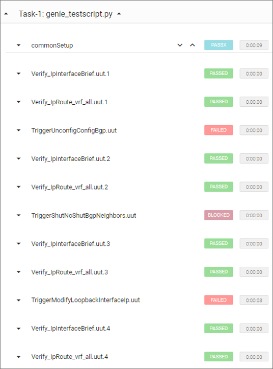

Run Test Scripts
This topic describes how you can use the pyATS Library to build and run test cases and use them for automated network testing.
You don’t need to know Python — you can use the genie run functionality from your Linux terminal. Simply stated, you tell the system the test cases to run, the order to execute them, and the data to pass to the system at runtime.
Automated testing process
The pyATS Library provides the building blocks that make it easy for you to automate your network testing. Simply:
Select from a pool of pre-written test cases (triggers).
Tell the system to run them in a specific order, and the data to use for each case.
You can also specify any pre- and post-processing that you want to apply.
The Harness module controls the flow of your network automation in three stages, as described in the following table.
Stage |
Name |
Description |
|---|---|---|
1 |
Common setup |
Prepare devices for testing:
|
2 |
Triggers and verifications |
Perform tests and run show commands on your devices. |
3 |
Common cleanup |
Check that device states match the original:
|
Note
The Harness is modular, and you can customize all of the components, including a trigger or verification to meet your automated testing requirements.
At runtime, the Harness pulls together all of the data that you’ve defined in the job file and datafiles.
Advantages of a modular strategy
Consistent, standards-based test cases are reusable.
You can write test scripts efficiently, using the reusable, plug and play test cases as building blocks.
It’s easy to customize the standard test cases to meet your requirements.
The automated testing process is data-driven — you don’t have to re-write tests, just modify the datafiles.
You can choose from a few hundred pyATS Library open-source API functions to define your test case actions and steps.
Triggers
What is a trigger?
A trigger is an action or sequence of actions performed on a device, which changes the device state or configuration.
You can think of a trigger as equivalent to a pyATS test case. The pyATS Library provides you with a pool of triggers for the most common actions, already written and available to use out-of-the-box. Select a trigger name from the list to see a description.
Structure of a trigger
Remember that you can use genie run with the pyATS Library pool of triggers and verifications. But if you know or want to learn a bit of Python, you can customize a trigger to meet your requirements. A trigger is a Python (*.py) file that has a standard structure, as shown in the following example.
from genie.harness.base import Trigger
from pyats import aetest
class TriggerClassName(Trigger):
@aetest.test
def section_1(self, uut, steps):
''' Learn prerequisite information
Args:
uut ('obj'): Device object
steps ('obj'): steps context manager
'''
with steps.start('Step 1 check if bgp neighbor is shut down') as step:
is_expected = uut.api.is_bgp_neighbors_shutdown(uut, [‘1.1.1.1’], ‘ipv4’)
if is_expected:
step.passed('Reason this step passed')
else:
step.failed('Reason this step failed')
The class is the name of the trigger and inherits from the pyATS Library Trigger object. Each class performs one specific task, which can have multiple steps. For more detailed information, see the Harness Developer Guide.
Verifications
What is a verification?
A verification is the execution of a show command to retrieve the current state of one or more devices. A verification typically runs before and after an action (trigger) to compare the previous and current device states.
How do verifications work?
By taking an initial snapshot (a parsed show command), and then taking the same snapshot after each trigger runs, the system can compare the snapshots to ensure that here are no unexpected changes to your network configuration or operational state.
Datafiles
The YAML datafiles control the flow of test execution. This makes your automated testing data-driven, with no hard-coded values required in your testing scripts. The datafiles contain the values to pass to the system at runtime.
Trigger datafile
A trigger datafile is a YAML file that tells the pyATS Library which test cases to run and where they are:
Trigger name
Trigger source — the path and class (trigger)
Devices on which to run the test (use the
-- deviceargument to specify devices other than ‘uut’)Any parameters (input) to pass as arguments to the trigger functions
Each trigger description tells you the mandatory and optional fields of its associated datafile.
Tip
If you use the standard pyATS Library triggers, you don’t have to provide a trigger datafile. The system uses the default datafile stored in your virtual environment at /genie_yamls/<uut_os>/trigger_datafile_<uut_os>.yaml. The default trigger datafile specifies the device ‘uut’, which you define in your testbed yaml file.
For more details, see the complete trigger datafile schema.
Verification datafile
Similar to a trigger datafile, a verification datafile specifies the following minimum information:
Verification name
Verification source — the path and class (trigger)
Devices on which to run the test (use the
-- deviceargument to specify devices other than ‘uut’)Any parameters (input) to pass as arguments to the verification functions
For more details, see the complete verification datafile schema.
Job file
A job file defines how the system creates and runs a dynamic test script:
pyATS Library functionality to import
gRun command
Trigger UUIDs to indicate which trigger classes to execute
Verification UUIDs to indicate which verifications to execute
If you use genie run, you don’t need a job file.
Tip
For a more detailed example and to see an actual job file, go to https://github.com/CiscoTestAutomation/examples/tree/master/libraries/harness_triggers.
How to run a test case
The following examples show you how to run a single test case and a test script that includes multiple test cases.
Use the command line to run a single test case
You can run the following example using the mock device.
In your virtual environment, change to the directory that contains the mock YAML file:
(pyats) $ cd mock
Use
genie runand specify the testbed, trigger, verification, and device, and log details:(pyats) $ genie run --testbed-file mock.yaml --trigger-uids="TriggerShutNoShutBgp" --verification-uids="Verify_BgpProcessVrfAll" --devices uut
Result: The system displays the test results on-screen and creates an HTML log file named TaskLog.html in the current directory.
Tip
To see a user-friendly file that you can easily read in a web browser, run the command:
pyats logs listLook for the file you want to see, and then run:
pyats logs view -nwhere n is the log index, for example:
pyats logs view -8The log viewer organizes the data so that you can drill down for more details.
If you’re a DevNet user and you want to receive an email with the results, add the argument
--mailto <address>.The following example shows part of the log where you can see the overall automated testing process. Note that the verification ran before and after the trigger.

Use a job file to run a test script
When you use a job file to run multiple test cases, you are using an automated test script.
This example shows you how to specify a job file that defines multiple triggers and verifications. For this example, you’ll need to clone or download the GitHub examples. We’ll use the harness_triggers example and the mock data provided.
Note
This example shows you how to use a job file, but you can also run multiple test cases using genie run.
In your virtual environment, change to the directory that contains the example:
(pyats) $ cd examples/libraries/harness_triggers
Run the following command:
(pyats) $ pyats run job demo2_harness_triggers_job.py --testbed-file cisco_live.yaml --replay mock_device
Result: The system displays the test results on-screen and creates an HTML log file named TaskLog.html in the current directory.
Tip
You can use the log viewer to see a user-friendly log in your web browser.
If you’re a DevNet user and you want to receive an email with the results, add the argument
--mailto <address>.
The following example shows part of the log where you can see the overall automated testing process. Note that the system ran the verifications once after the common setup and again after each trigger.

See also…